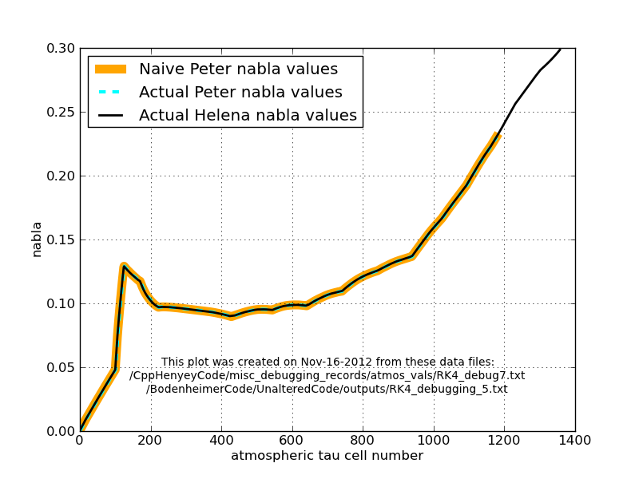

Eqn.
2
Date & Time: Nov. 16, 2012
Location: Campus
Computing context: /Desktop/Research/CppHenyeyCode, /Desktop/Research/BodenheimerCode/UnalteredCode/
Continuing from last time:
Eqn.
2
For reference, the difference that this causes in the nabla values used b/w the two codes is shown in Figure 3.
Need to remember to ask Greg why the nabla profile difference shown in Figure 3 would lead to the different atmospheric temperature profiles-- in terms of physical processes/intuition for what's going on in there.
So, now that we know that the difference b/w the atmos codes' results is due to the non-zero values of CONVNAB in Peter's code, the next thing to do is to see if I can figure out a way to (artificially?) suppress that in Peter's code. In his nabla subroutine, it looks like this convective gradient thing depends on the mixing length scale height parameter.
If I set the L/H parameter to zero (in the input conditions file), will that turn off the convective gradient contribution in Peter's code?
Using inputs/10MjNF_no_conv_nab.start as the input. It has L/H set to zero.
Well, it doesn't cause the code doesn't crash!
Outputting the RK4 debugging results from that run to outputs/RK4_debugging_4.txt
Let's plot those results in python, and compare them to the Helena atmos outputs from one of its runs that used Eqn. (1) to generate nabla values.
Results from this test shown in Figure 4old.
Comparison
of the atmospheric temperature profiles generated by Peter and
Helena when the
mixing-length parameter in Peter's code is set to zero (i.e. CONVNAB
contribution to overall TPNAB value is eliminated...?).
Figure
4old:
Figure 4old shows that the two codes results agree very well, though not perfectly, when the CONVNAB value is Peter's code is forced to equal zero (at least, I think that's what setting the L/H parameter to zero does. It's possible that in the case L/H=0, Peter's code resets the RHL parameter to some default non-zero value. The RHL parameter shows up in the CONVNAB calculations, and is derived from the L/H parameter specified in the input file.)
I may want to go back, later, and actually hard-code CONVNAB = 0 into Peter's code, because it looks like there's still maybe some non-zero contribution from that parameter going on. See Figure 5old for evidence of that.
A comparison of the
nabla and TPNABLA values generated by the two codes when Peter's
code uses the input L/H = 0.
Figure
5old:
For reference, Eqn (3) defines TPNAB.
Eqn.
3
To sum up:
I think I know why Peter's code and mine weren't agreeing. It's due to the way the nabla values in the atmosphere are calculated.
MAYBE NOW IS A GOOD TIME TO BREAK OUT THE CAUTIOUS OPTIMISM?
Today's work:
Hard-code CONVNAB = 0 into Peter's code, because it looks like there's still maybe some non-zero contribution from that parameter going on. See how well it agrees w/ Helena's results then.
Results of that shown in Figure 1.

Comparison of the
atmospheric nabla profiles produced from Peter's code and Helena,
when the CONVNAB calculations in Peter's code are completely
by-passed, in addition to having the L/H input parameter set
to zero.
The two codes agree
perfectly in this case. All of the other atmospheric parameter
profiles also agree perfectly b/w the two codes now, too.
Figure
1:
See if Peter's code will still converge a 10 Mj no fusion model w/ the L/H parameter set to zero.
Result: It will converge, but NOT for the dTIME = 0 case. You have to let dTIME > 0 for it to converge. But, when you do that, it converges very quickly.
Consequences for debugging: for the next step, keep dTIME = 0, just for comparing the CDEG and variable correction values that get calculated on the first convergence loop to see if they're the same b/w the two codes.
After you get those results to agree, change dTIME > 0 in both codes, and check that all the relevant profiles still agree. Probably this will provide plenty of fodder for debugging...
If this step fails:
See if Peter's code will converge a 1 Msun with fusion system, starting from the PMSS tar.star-like polytropic initial Conditions.
If this fails: you need to bite the bullet and implement those CONVNAB Calculations in Helena.
Try Peter's code (w/ L/H = 0) on a 1 Msun polytropic model WITHOUT fusion. I
If this fails, get Greg's help, b/c I have no idea why this would happen if it worked on the otherwise identical with-fusion case.
Try Peter's code w/ L/H=0 on a somewhat evolved 1Msun no-fusion model.
If that fails, compare how the internal structural evolution in both the body of the system and its atmosphere differ b/w the L/H=0 and L/H>0 cases. Maybe that will offer some clues about why it fails here and not before.
Try Peter's code w/ L/H=0 on the mass chain-down process that you used to get the 10Mjup test-case model you've been using for the past ~year. If this succeeds, then you've just found yourself the 10Mjup no-fusion test case that you need for subsequent steps.
If this doesn't work... ugh. First, find the mass at which the chain-down process stops working. That may give some clues about what's going on.
COME BACK HERE AND FILL IN MORE DEBUGGING IDEAS ON THIS BRANCH.
Make sure both codes now produce the same CDEG profiles on the 10Mj no-fusion system, particularly at the outer boundary / bottom of the atmosphere.
Reacquaint myself with all the procedures I used to get CDEG profiles out of the main body of the system in each of the two codes
Run each code for a single iteration on the 10Mj no-fusion system.
Capture the relevant outputs into txt files
Compare the results in python. (You already have scripts for comparing the two codes' results for this stuff, remember.)
Make sure that both codes now produce the same P/R/L/T correction profiles.
If not, then you've still got problems with the outermost CDEG values... probably
THERE ARE PROBABLY STILL ADDITIONAL DEBUGGING STEPS TO PLOT OUT, HERE, SO COME BACK TO THIS.
Check that Helena successfully converges the 10Mj no fusion model
Compare the converged model to Peter's results
Check that Helena and Peter also produce the same converged model with dTime > 0